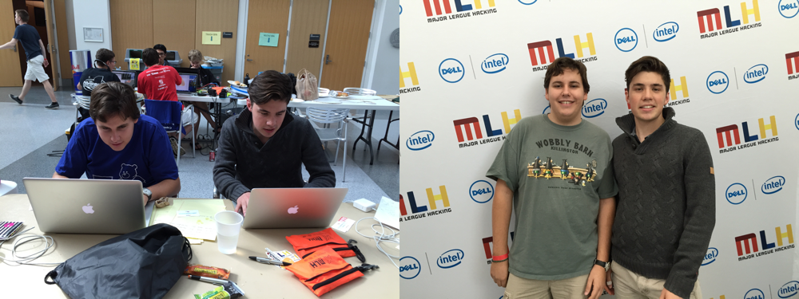
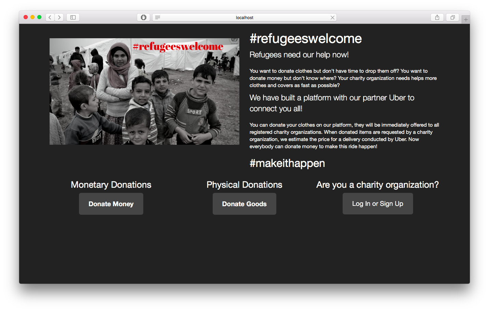
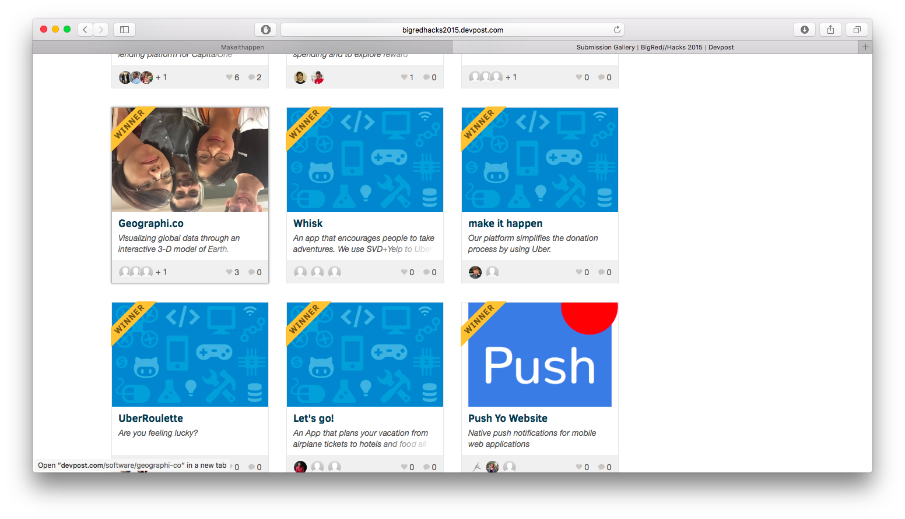

Right at the beginning of my internship in New York City, I got involved with Hackathons. Before that I didn't even know that they exist. BigRedHacks at Cornell University was my second Hackathon ever. I really Hackathons! You always improve your skills and get to know awesome people! Try it even you can't code, I promise you will learn a ton!
Let me introduce you to TEAM AWESOME… (I am the guy on the right)

Michael (my partner) and me, we built a rails app called "makeithappen". The idea for our app was inspired by the refugee crisis going on in Europe. We wanted to help!
MakeItHappen is platform which simplifies the donation process. Let's imagine there is a person A in Germany who wants to donate clothes but is too lazy to actually take the clothes to an official donation station. Ok that sucks! Then there is another person B from anywhere in the world who feels deeply touched by the pictures in the news and wants to donate money. Our platform brings brings these two persons together.
Person A can donate an item by inserting all relevant information (including the address). Person B then can see a list of donated items and can press the button "MakeItHappen". Person B will then donate the amount of money which is needed to pay for an UBER to pick up the clothes and take them to an official donation station. Problem solved and everybody is satisfied - including the refugees!
Here you can see our rails app. 
At the end Person A could insert a donation item. We then used the google API to calculate the exact coordinates of the address of Person A and the ONE AND ONLY donation station in Munich hahaha ;-) Then we fed the UBER API with these coordinates and calculated the price for trip. Person B could see a list of all donated items and their estimated prices to get them to the donation station.
As we were both rails beginners, we were pretty proud of our results!
We both couldn't believe it, but it really happened!
We were second in the category "Best use of UBER API". 
At a hackathon you have to cheat a little bit in the presentation.
For example we ran out of time to actually develop a signup/login system. So our login button always "worked". It didn't matter which data you put in. Our second limitation was the special ONE AND ONLY donation station in Munich. All items should be delivered to this station whether they were donated in Munich or in Berlin. That of course doens't make sense! In our presentation we picked a person who lives in Munich of course ;-)
Hackathons are fun - So have fun!
Don't get to serious about your project and forget to have fun!
A Hackathon without preparation is a lost Hackathon
OK that's not true. Only a Hackathon where you did't show up is a lost Hackathon. With that being said, the preparation we did before helped us a lot to get started. For example we discussed our git workflow before (at the end it was a mess, but at the beginning everything was clean) as well as the version of rails we wanted to use.
Get something done - it doens't matter how bad it is
I always see guys at Hackathons who spend the whole time with brainstoarming and starting again and again. They end up learning not much. Fuck it and just build something. Nobody will judge you!
As always, I would love to hear your feedback!
Shoot me an email: hello@janruettinger.co